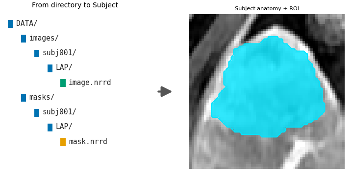
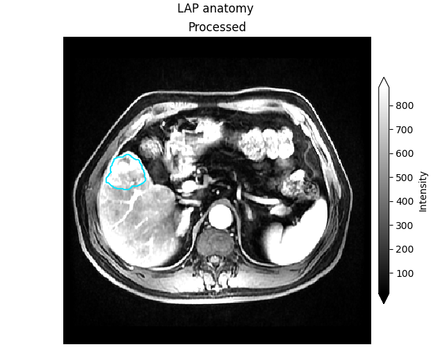

Note
Go to the end to download the full example code.
Load from directory#
Background. Before any habitat can be found, HABIT needs to know which images and which tumour mask belong to each patient. The simplest way is a fixed folder layout that HABIT reads in one call.
Purpose. You get a Cohort (printed), a
summary figure of the loaded subject, and a greyscale slice with the ROI
contour to check that image and mask line up.
When to use. Use this when your preprocessed files already follow the HABIT folder layout (the official demo pack does). For loose files or arrays, see the other pages in this section.
Key terms.
cohort – HABIT’s list of subjects (
Cohort), each with its images and ROI mask; this is whatfit/fit_predicttake.subject – one patient (
Subject): an id plus a dictionary of images and a dictionary of masks.series / modality – one image of that patient, such as the arterial (
LAP) or portal-venous (PVP) phase; the folder name underimages/<subject>/is the name you pass inmodalities=.ROI / mask – the region of interest, usually the whole tumour, stored as an integer mask; only voxels inside it are analysed (0 = background). The folder name under
masks/<subject>/is the name you pass inroi=.
Build a Cohort from a folder tree with
cohort_from_directory(). The tree is
images/<subject>/<series>/<one file> and
masks/<subject>/<roi>/<one file>. Below: several people from the
tree, then one person taken from that cohort.
Directory layout#
fetch_demo() prints the absolute path and an
inventory. That printed tree is what your own DATA must match.
from pathlib import Path
import matplotlib.pyplot as plt
from habit.contracts import Cohort, cohort_from_directory
from habit.datasets import fetch_demo, inspect_preprocessed_root
from habit.viz import plot_directory_ingest, plot_intensity_slice
# Official pack (first call downloads; later calls reuse the cache).
# Your own data: DATA = r"D:/my_study/preprocessed"
DATA = fetch_demo()
print(inspect_preprocessed_root(DATA))
# Several people: every subject folder under DATA.
# ``modalities`` picks the image folders to load; ``roi`` picks the mask folder.
many = cohort_from_directory(DATA, modalities=("LAP",), roi="LAP", name="many")
print(many)
# One person: take one Subject out and wrap it again. A plain list is not a cohort.
one = Cohort([many[0]], name="one")
print(one)
HABIT demo data (cached)
DATA (preprocessed root): C:\Users\dongm\.habit_data\demo-data-v1\preprocessed
On-disk inventory of this folder:
subjects (5): subj001, subj002, subj003, subj004, subj005
image series: LAP, PVP, delay_3min, pre_contrast
mask keys: LAP, PVP, delay_3min, pre_contrast
example image: images/subj001/delay_3min/WATER__BH_Ax_LAVA_Flex_3min_Series0012.nrrd
example mask: masks/subj001/delay_3min/WATER__BH_Ax_LAVA_Flex_10min_Series0017_mask.nrrd
Your own data must use the same folder tree (change IDs / series names):
DATA/
images/<subject_id>/<modality>/<one image file>
masks/<subject_id>/<roi>/<one mask file>
Then load it with the same call the demos use:
cohort = cohort_from_directory(DATA, modalities=("LAP",), roi="LAP")
Swap DATA / modalities / roi to match your tree. Mask key is often the
same as one image series (here LAP).
DATA (preprocessed root): C:\Users\dongm\.habit_data\demo-data-v1\preprocessed
On-disk inventory of this folder:
subjects (5): subj001, subj002, subj003, subj004, subj005
image series: LAP, PVP, delay_3min, pre_contrast
mask keys: LAP, PVP, delay_3min, pre_contrast
example image: images/subj001/delay_3min/WATER__BH_Ax_LAVA_Flex_3min_Series0012.nrrd
example mask: masks/subj001/delay_3min/WATER__BH_Ax_LAVA_Flex_10min_Series0017_mask.nrrd
Your own data must use the same folder tree (change IDs / series names):
DATA/
images/<subject_id>/<modality>/<one image file>
masks/<subject_id>/<roi>/<one mask file>
Then load it with the same call the demos use:
cohort = cohort_from_directory(DATA, modalities=("LAP",), roi="LAP")
Swap DATA / modalities / roi to match your tree. Mask key is often the
same as one image series (here LAP).
Cohort(5 subjects [subj001, subj002, subj003, subj004, subj005], name='many')
Cohort(1 subjects [subj001], name='one')
Visual summary of this route: the directory tree becomes plottable Subjects (right panel zooms to the ROI; badge colours: folder / image / mask).
subject = one[0]
Path("out").mkdir(exist_ok=True)
fig_ingest = plot_directory_ingest(subject.image("LAP"), subject.mask("LAP"))
fig_ingest.savefig("out/data_in_ingest.png", dpi=150, bbox_inches="tight")
plt.show()

F:\work\habit_project\habit\viz\diagrams.py:245: UserWarning: Display geometry conflict: image/anatomy direction does not match mask/label direction. Using the mask/label direction so coronal/sagittal superior-up follows the labelled anatomy. Pass direction= to override.
resolved_direction, resolved_spacing = resolve_display_geometry(
Anatomy check: greyscale LAP slice of the first subject, with the ROI
contour. Pass the ImageVolume (not .data).
fig_anatomy = plot_intensity_slice(
subject.image("LAP"),
roi_mask=subject.mask("LAP"),
title="LAP anatomy",
roi_contour=True,
)
fig_anatomy.savefig("out/data_in_anatomy.png", dpi=150, bbox_inches="tight")
plt.show()

F:\work\habit_project\habit\viz\intensity.py:616: UserWarning: Display geometry conflict: image/anatomy direction does not match mask/label direction. Using the mask/label direction so coronal/sagittal superior-up follows the labelled anatomy. Pass direction= to override.
resolved_direction, resolved_spacing = resolve_display_geometry(
Several series share one mask folder. modalities are image folders.
roi is the mask folder. The names can differ. DICOM is
Before: image preprocessing. Loose files are
Load from NIfTI files.
two_series = cohort_from_directory(
DATA, modalities=("LAP", "PVP"), roi="LAP", name="two_series"
)
print(list(two_series[0].images), list(two_series[0].masks))
['LAP', 'PVP'] ['LAP']
Total running time of the script: (0 minutes 1.970 seconds)